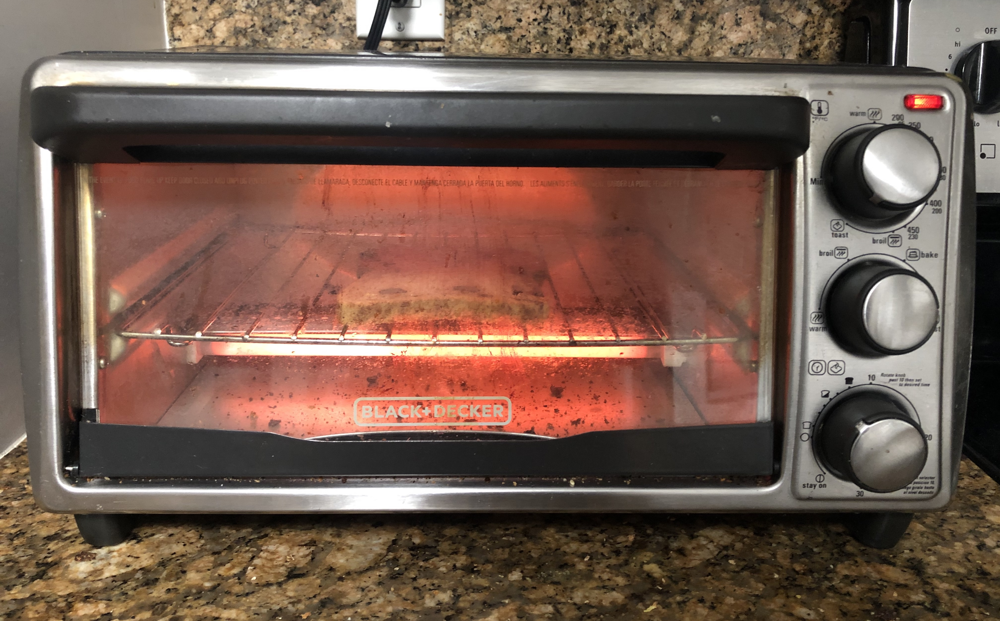
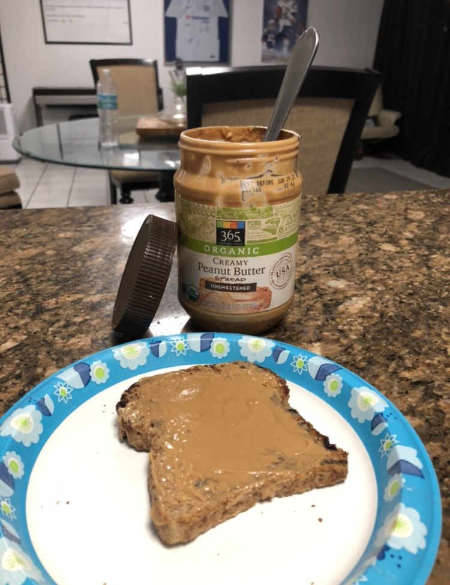
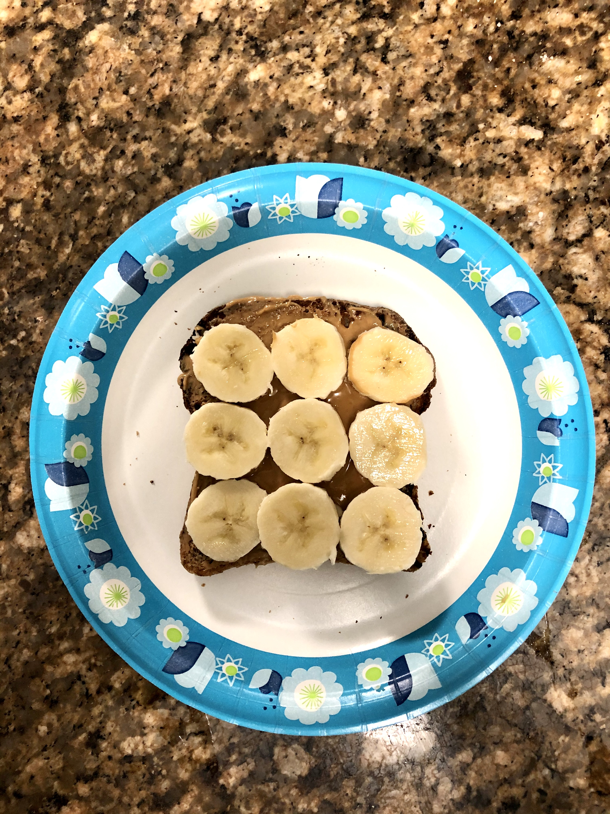
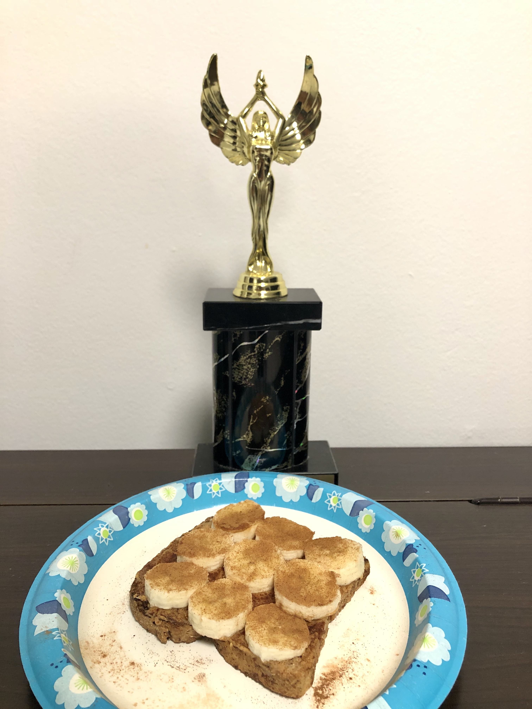

Step1: Take Out IngredientsHealthy Ingredients = More Nutrition
- Frozen,Cinnamon Raisin, Ezekiel Bread
- Peanut Butter
- Banana
- Cinnamon or Cinnamon Sugar
- Knife

First, begin by gathering your ingredients. The recommended bread for this toast is frozen, cinnamon-raisin, ezekiel bread. I don't know why, but it just tastes better frozen. Next, select the peanut butter of your choice. Grab one, medium sized banana. Side Note: You may not need the whole banana. Finally, you will need cinnamon or cinnamon sugar and a knife.
Step2: Place Bread In ToasterFrozen Bread is Yummy!
Place the frozen cinnamon raisin bread into your toaster. Whether you have a vertical, two slot toaster or a toaster oven, make sure you are familiar with your heating settings. Self-evaluate: Are you a lightly-toasted gal, a burnt bread boy, or somewhere in the middle? Apply the appropiate heat.
Step3: Take Out Toast, Spread Peanut ButterCreamy PB > Crunchy PB
Once the bread is toasted to your liking, take out the toast and place it on a plate. Let it cool for a couple seconds, then spread the peanut butter. You want the chilled or room temperature peanut butter to compliment the warm toast.
Step4: Slice and Apply BananaB-a-n-a-n-a-s
Take your knife and cut your banana into 9 slices. This number will roughly cover the surface area of your cinnamon-raisin toast. The thickness of your banana slices is a personal preference, however I recommend 1/4 inch per slice.
Step5: Sprinkle Cinnamon and EnjoyLet's Have A Toast!
After the banana slices are placed on the bread, sprinkle the cinnamon or cinnamon sugar on top. Be sure to evenly disperse the cinnamom to avoid an experience similar to those who have attempted the vine-famous, "Cinnamon Challenge". Enjoy your toast and attack the day!
